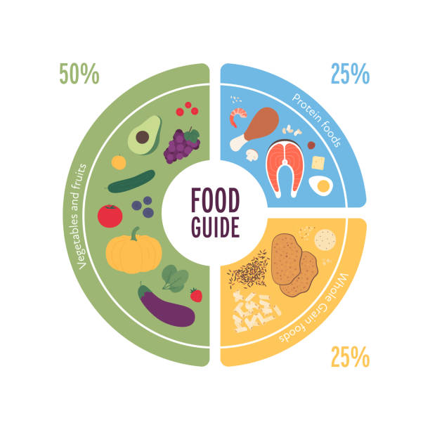

Dietary Recommendations
Tailored food suggestions based on your health profile and lifestyle.

Disease-Specific Food Guidelines
Guidance on foods to enjoy or avoid based on your health conditions.
Tailored food suggestions based on your health profile and lifestyle.
Guidance on foods to enjoy or avoid based on your health conditions.
"This app helped me manage my diabetes by suggesting the right foods!"
- Priya S."I love that I can donate my unused medicine through the app to help others."
- Ravi K.